от 1 900 ₽
Авторский массаж спины или ног
Фирменная техника мастерской. На выбор — спина или ноги.
Записаться
Мастер · 60 мин
Старший мастер · 45–60 мин
Мастер-эксперт · 45 мин
Услуги и цены
Выберите направление — внутри цены, длительность и запись в один клик.
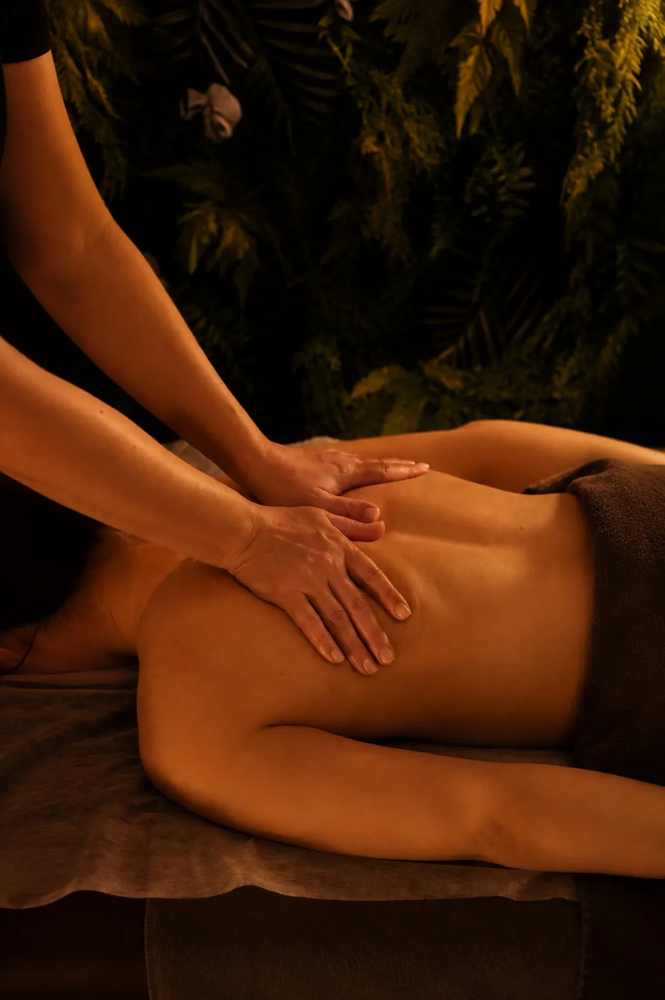
Авторский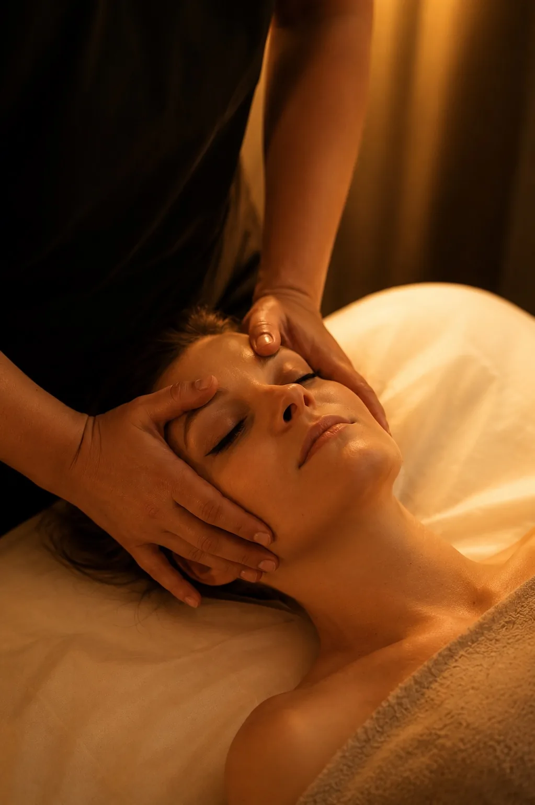
Лицо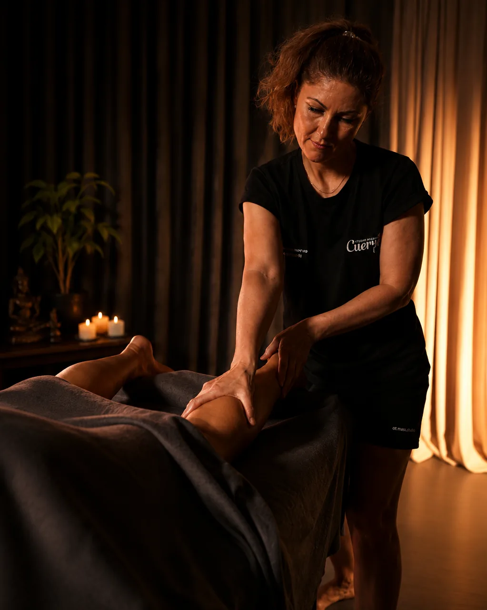
Коррекция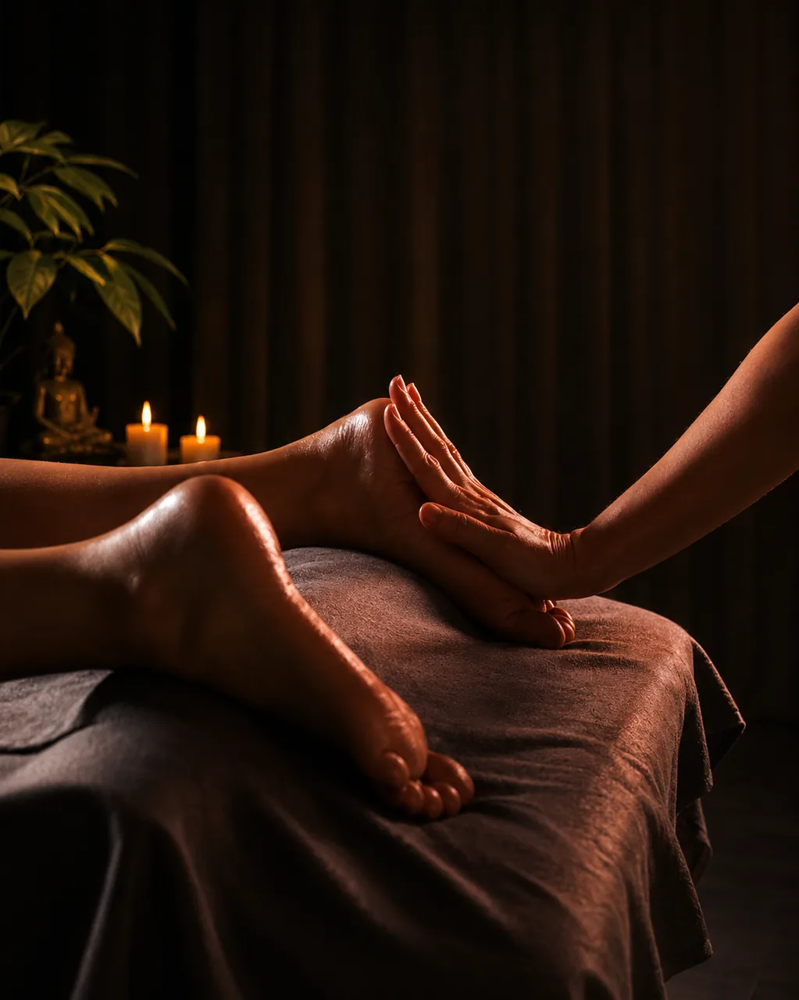
SPA-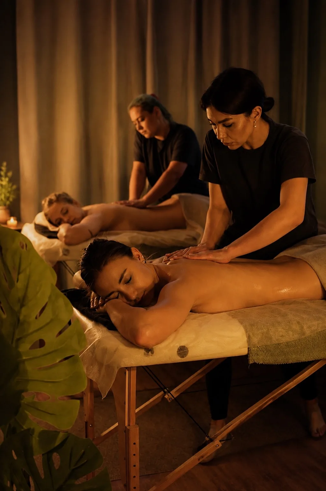
Вдвоём один кабинет, два мастера, общий ритуал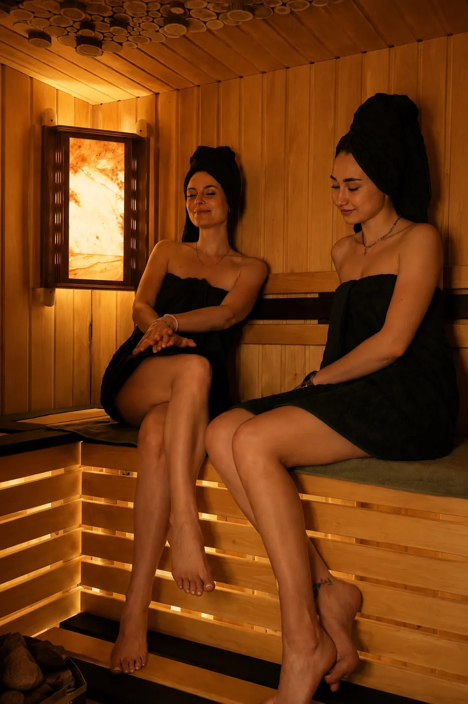
Прогреться кедровая бочка · сауна с гималайской солью Массаж для беременных бережно, со 2 триместра, в удобном положении на боку Подарок, который ждут ПодарочныйПопулярные услуги

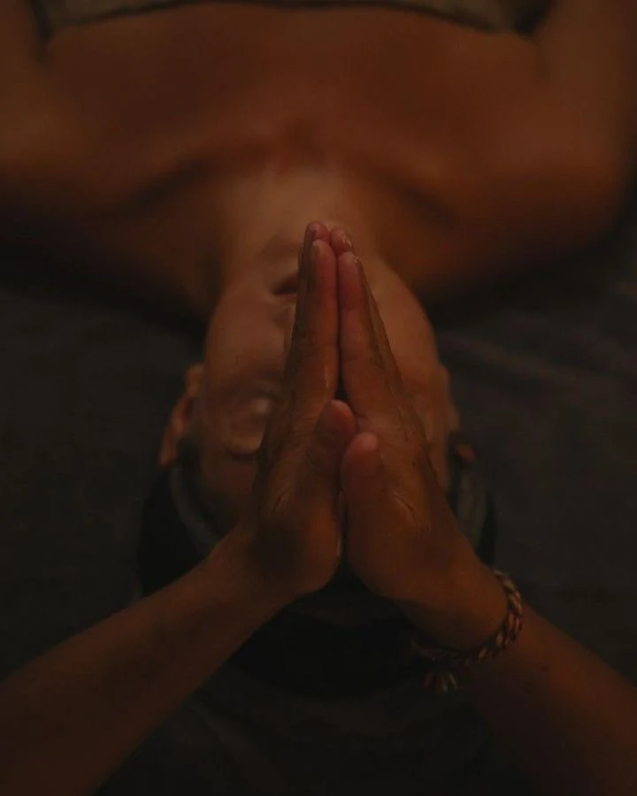
 Записаться
Записаться
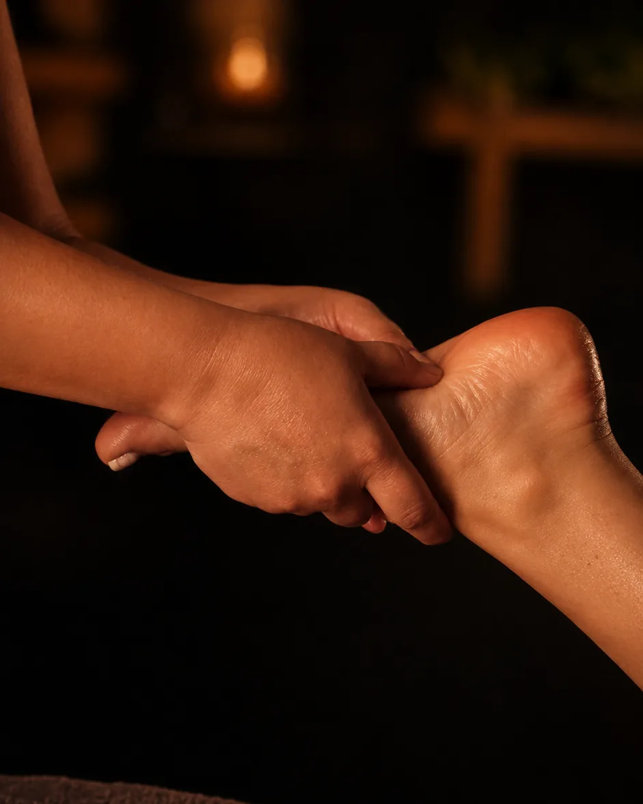
Записаться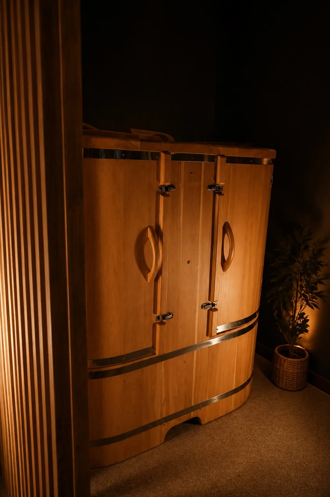
Записаться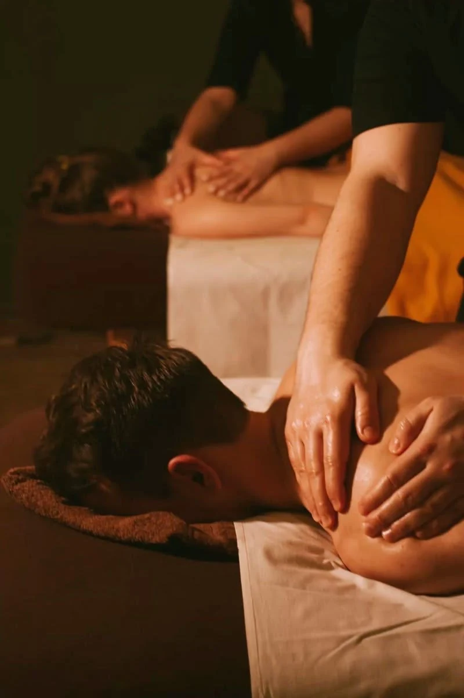
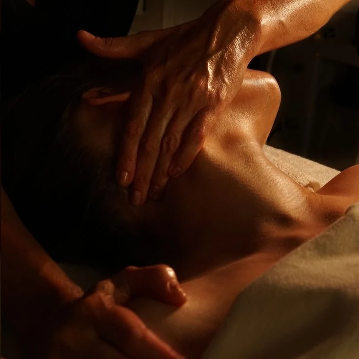
ЗаписатьсяПозвоните — администратор задаст пару вопросов и подберёт программу под ваш запрос и бюджет. Это бесплатно и ни к чему не обязывает. А если уже знаете, что хотите, — выберите время сами в онлайн-календаре.
+7 (927) 892-30-13Онлайн-календарь салона
Свободные окна, мастера и длительность — видно сразу. Запись подтверждается автоматически.
Выбрать время онлайнОтзывы клиентов
Наталья Сизова
24 февраля · Знаток города 2 уровня
Замечательный салон, комфортная, уютная расслабляющая обстановка. Приятный, внимательный персонал. Массажисты высший класс: с вниманием и краткими комментариями творят чудо массажа. Дали рекомендации избавления от проблем не только с помощью массажных техник — Светлана с Мариной посоветовали комплексы упражнений ЛФК для расслабления и укрепления мышц. Атмосферное, приятное место восстановления и отдыха. Рекомендую.
Отзыв с Яндекс Карт
Виктория Чугурова
15 февраля · Знаток города 6 уровня
Были 14 февраля, очень красиво была украшена комната к празднику. В помещении чисто, красиво, аккуратно. Обслуживание на высшем уровне: вежливый персонал, массажисты — профессионалы. Самочувствие после массажа чудесное.
Отзыв с Яндекс Карт
Дмитрий
12 февраля · Знаток города 3 уровня
Посетили данный массажный салон с девушкой по совету друзей. Выбрали программу для двоих «Для влюблённых». Не описать словами, как же здорово нам промяли всё тело, как согнали с мышц усталость и наполнили наше тело новой энергией и новыми силами. Тело как будто перезагрузилось! Спасибо мастерам за профессионализм, чуткие и уверенные действия и что прислушивались к нам во время всего процесса.
Отзыв с Яндекс Карт
Евгений
Отзыв с Яндекс Карт
Была уже неоднократно. Первый раз приходили с мужем на спа-массаж, были у Марины и Алины, остались довольны отношением персонала и качеством работы. Сейчас регулярно хожу на массаж спины к мастеру Сергею. Крутой специалист, всегда можно поговорить, послушать. Сеансы проходят с лёгкостью, а главное — спина не болит. Тем, у кого проблемы со спиной, очень рекомендую: здесь все мастера очень качественно делают свою работу.
Отзыв с Яндекс Карт
Почему к нам возвращаются
Собственная техника оздоровительного массажа. По ней обучены все мастера — результат не зависит от того, к кому вы попали.
Все мастера прошли длительное обучение и подтверждают квалификацию сертификатами. Мастер понимает, с чем работает, а не повторяет заученные движения.
Глубокий прогрев перед сеансом. Тело раскрывается — и массаж работает мягче и глубже.
Один кабинет, два мастера и общий ритуал от прогрева до чайной церемонии. Частый выбор для пар и подруг.
О мастерской
Cuerpo в переводе с испанского — «тело». Мы работаем с ним как скульпторы: снимаем лишнее напряжение, возвращаем форму и лёгкость, помогаем телу вспомнить своё здоровое состояние. Поэтому наши мастера называются скульпторами, а сеанс — не строчкой из прайса, а работой с конкретным человеком.
Мы не берём в команду случайных людей: каждый мастер проходит обучение на базе салона и регулярно повышает квалификацию. Перед сеансом он уточняет запрос, состояние и зоны, которые беспокоят, — и уже под них подбирает технику и силу нажима.
Более 1000 клиентов, 5,0 на Яндекс Картах и награда «Хорошее место» — для нас это про одно и то же: к нам возвращаются, потому что после сеанса телу действительно легче.
Как мы работаем
Мы регулярно учимся, оттачивая навыки движений и чувствования тела, и работаем с телом целиком — а не разминаем одно место, чтобы вечером всё вернулось обратно.
Перед сеансом мастер выясняет, что беспокоит: зажимы, тяжесть, усталость или желание изменить фигуру. От этого зависит техника, темп и глубина проработки.
Проминающие и скульптурные техники, работа с местами крепления мышц и мягкие дренажные движения от стоп. Мы снимаем не только само напряжение, но и то, что его держит.
После сеанса — травяной чай и время спокойно прийти в себя, а не бежать по делам. Если нужен курс, мастер подскажет график повторов: от сеанса к сеансу результат становится только заметнее.
Результаты
Реальные снимки наших клиентов. Потяните ползунок, чтобы увидеть разницу — это результат работы мастера, без фильтров и ретуши.
Массаж лица — результат одного сеанса
Изменения заметны уже после первых сеансов —
и становятся выразительнее от визита к визиту
Атмосфера
Тёплый приглушённый свет, дерево, зелень и запах трав. Здесь не хочется торопиться — и это часть работы с телом.
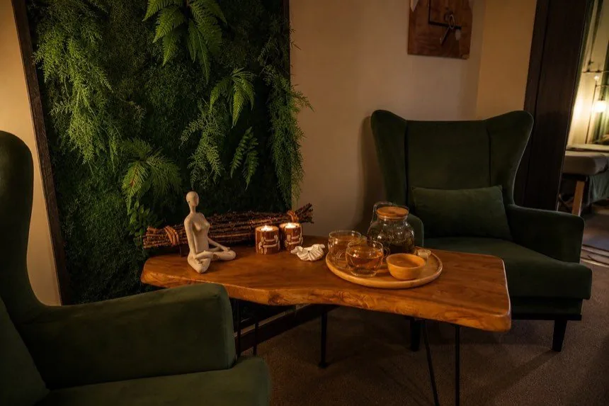
Зона отдыха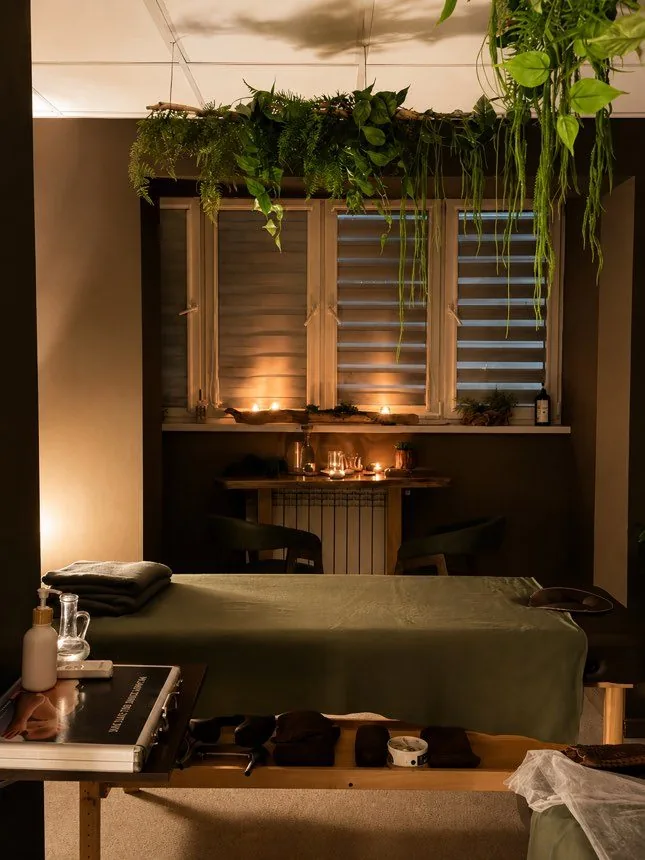
Здесь выдыхаешь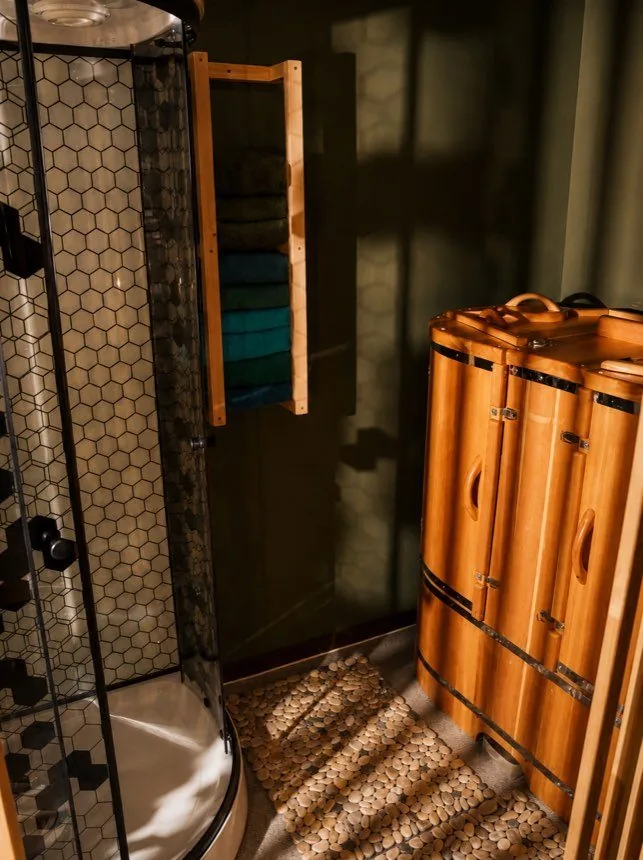
Кедровая бочка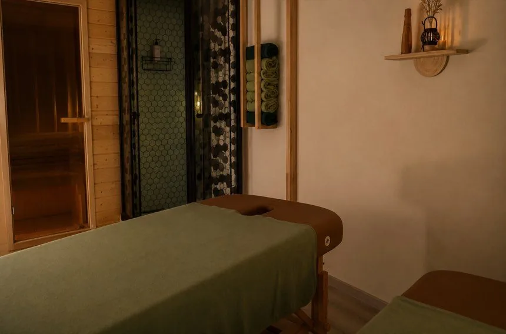
Сауна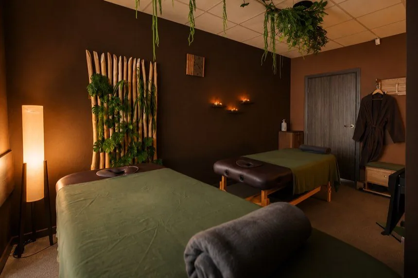
Кабинет для двоих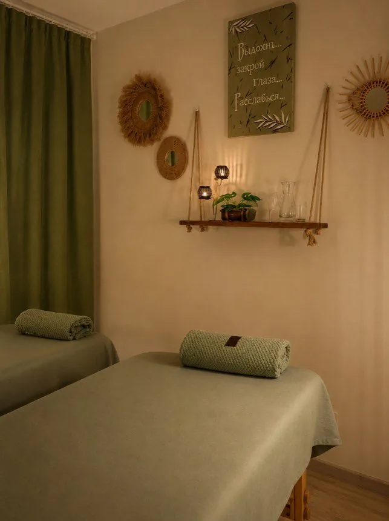
SPA вдвоём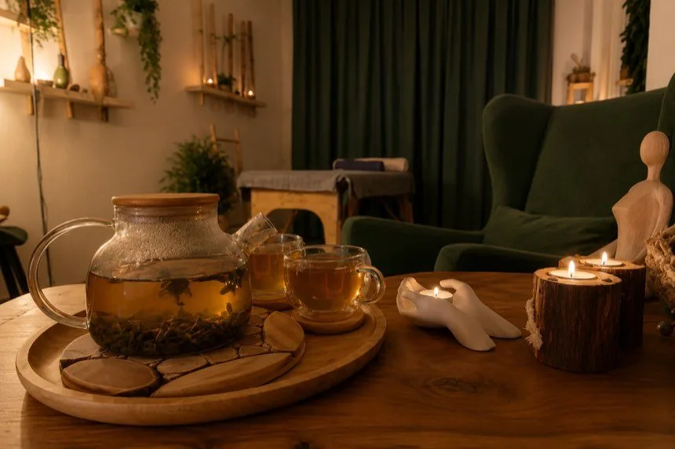
Чайная церемония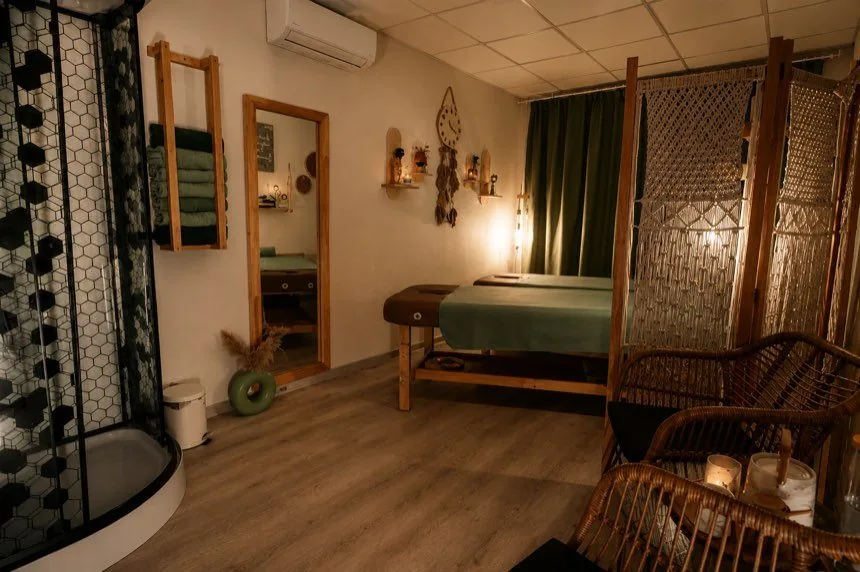
Душ в кабинете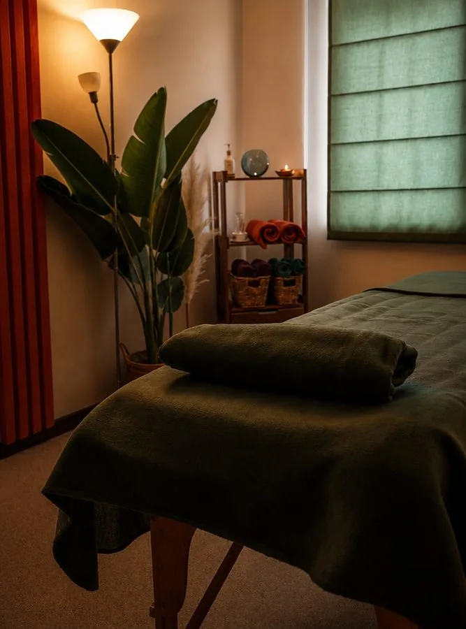
Всё готово к сеансу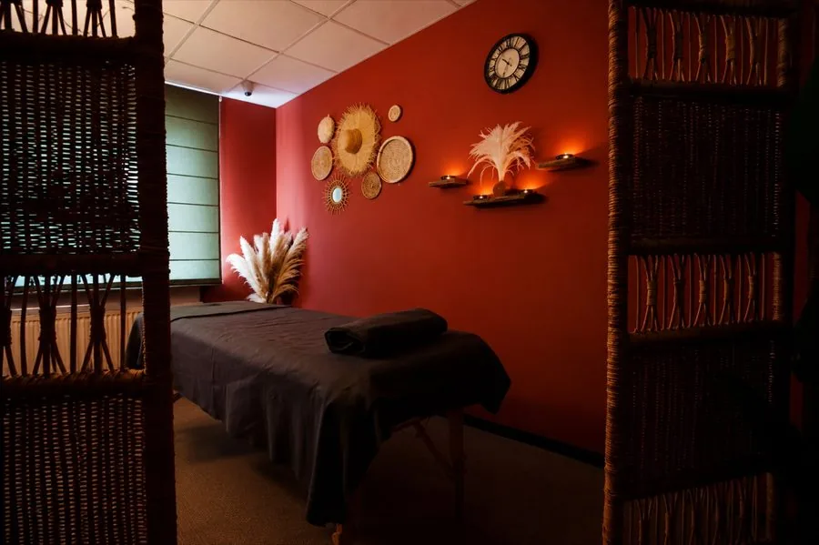
Свет свечей и тишина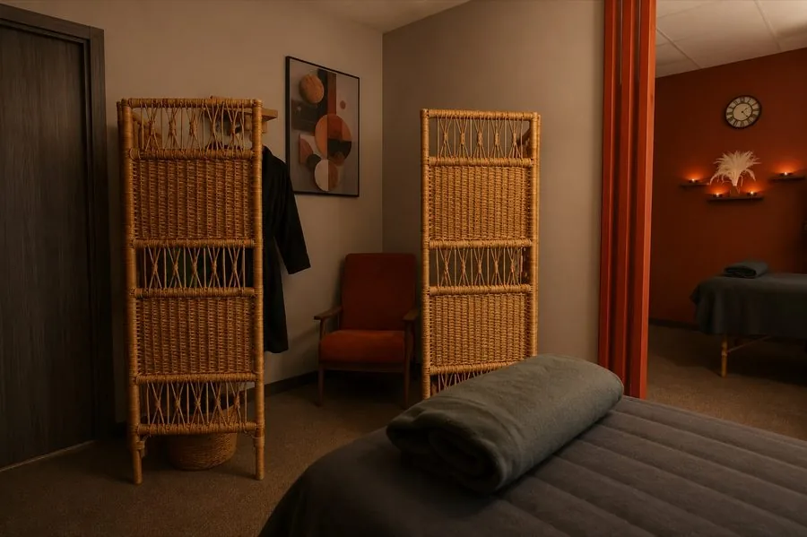
Внимание к деталям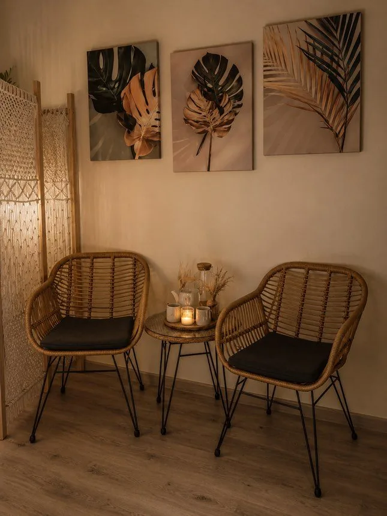
Отдых после сеанса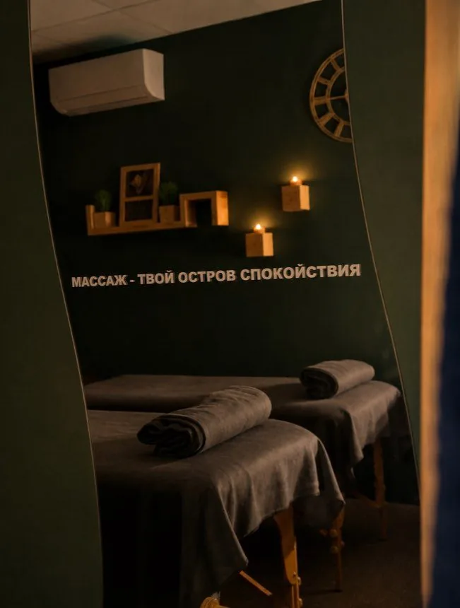
Остров спокойствия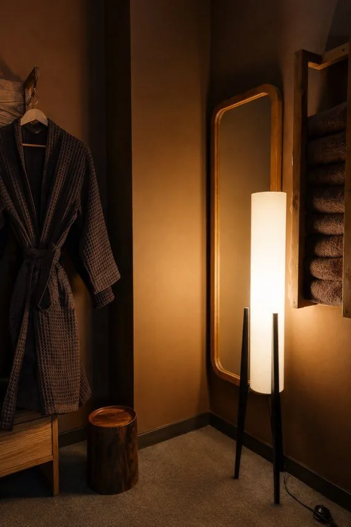
РаздевалкаЛистайте вбок · нажмите на фото, чтобы рассмотреть ближе
Наша команда
Мы не берём в команду случайных людей. Каждый мастер проходит обучение на базе салона и регулярно повышает квалификацию.
Марина Фролова
Основатель · автор методики
Начинала мастером массажа, сегодня опыт 11 лет. Из работы с более чем 1000 клиентов родилась авторская методика оздоровительного массажа тела — по ней Марина обучает всех мастеров мастерской. «Каждое движение в массаже выполняется со смыслом, а не механически».
Обучает мастеров
Татьяна
Старший мастер-скульптор
Авторский оздоровительный массаж спины и тела, антицеллюлитный, спортивный, программа «Великий Зевс». Одна из ведущих специалистов направления: точно считывает, где тело зажато, и подбирает нужную силу нажима. Прошла длительное обучение и регулярно подтверждает квалификацию сертификатами. Когда-то рискнула уйти из офисного кресла, чтобы работать руками.
ЗаписатьсяСветлана
Ведущий мастер по лицу
Буккальный и омолаживающий массаж лица, комплексы «Формула красоты» и «Моментальное преображение», мужской массаж лица. Также классический массаж спины, SPA всего тела и массаж головы. Более 4 лет по лицу, сертификаты косметика-эстетиста и обучение техникам работы с лицом: делает альгинатные маски, чтобы зафиксировать результат.
ЗаписатьсяГульназ
Мастер-скульптор
Классический массаж спины и тела, SPA-массаж и программы для одного и для двоих, испанский массаж, расслабляющий массаж головы и лица, горячие камни. Прошла длительное обучение и регулярно обновляет знания о техниках. Массажист с мягкими, но сильными руками. В прошлом — руководитель отдела.
ЗаписатьсяАнна
Мастер-скульптор
Классический массаж спины, SPA всего тела и программы для двоих, массаж головы, расслабляющий массаж лица, горячие камни. Прошла длительное обучение на базе Cuerpo: сильные руки и чуткие пальцы, которые находят зажимы в теле. В прошлом тренер по восточным единоборствам и психолог, сама клиент салона уже 6 лет.
ЗаписатьсяЕлена
Мастер-скульптор
Классический и SPA-массаж всего тела. Два года Елена встречала гостей на ресепшене — и всё это время училась, проходила обучения и шла к своей мечте стать мастером-скульптором. Бережные руки, внимательность к деталям и искреннее желание помочь: именно за это её всегда любили гости.
ЗаписатьсяПавел
Мастер-скульптор
Точечно и аккуратно добирается до зажатой зоны и разбирает её шаг за шагом — пока от напряжения не останется и следа. Прошёл углублённое обучение на базе Cuerpo у мастера-эксперта Марины Фроловой: больше 40 моделей, и каждая — новый шаг в мастерстве. Мастер на все руки: собирает сложные конструкции, теперь соберёт и ваше тело. Скромный, деликатный, аккуратный — с ним спокойно.
ЗаписатьсяАнастасия
Мастер-скульптор
Дипломированный массажист-эстетист, больше 3 лет практики, прошла повышение квалификации на базе Cuerpo у мастера-эксперта Марины Фроловой. «Хочу, чтобы мои клиенты забывали о тяжести в теле и видели в зеркале сияющее, подтянутое лицо, а в душе чувствовали настоящую радость от жизни». В профессию пришла из инженеров-технологов пищевых производств — желание помогать людям оказалось сильнее. Любит активный отдых, легко находит общий язык с детьми и может внезапно устроить мастер-класс по фалафелю.
ЗаписатьсяКак проходит визит
Выбираете время в онлайн-календаре или звоните. Администратор подтверждает запись, подбирает мастера и отвечает на все вопросы.
Перед сеансом обсуждаем запрос, самочувствие и зоны, которые беспокоят. Мастер подбирает технику и силу нажима.
Кедровая бочка или сауна по программе, затем массаж при приглушённом свете и аромасвечах.
Травяной чай со сладостями, спокойная музыка и время никуда не торопиться. И запись на следующий визит, если нужен курс.
Вопросы и ответы
Мы находимся в Тольятти, Автозаводский район, Приморский бульвар, 57 — вход с торца дома. Рядом остановки общественного транспорта и парковка. Работаем ежедневно с 09:00 до 21:00 по предварительной записи.
Проще всего — нажать «Записаться» на сайте: откроется онлайн-календарь салона, где видны свободные окна и мастера, запись подтверждается сразу. Если удобнее голосом или в переписке — звоните и пишите в Telegram, MAX и VK по номеру +7 (927) 892-30-13.
Результат вы почувствуете уже после первого массажа: расслабление, лёгкость и снятое напряжение, а массаж лица даёт видимый лифтинг с первого визита. Чтобы результат закреплялся и становился заметнее, его поддерживают курсом — обычно по одному сеансу раз в 5–7 дней. Точный график мастер подскажет после первой встречи.
Массаж в салоне — не медицинская услуга, это уход и работа с телом для хорошего самочувствия. Визит стоит перенести, если у вас высокая температура, недомогание, свежая травма или раздражение на коже. Если вы наблюдаетесь у специалиста или проходите курс назначенного им восстановления — сначала посоветуйтесь с ним, а мастеру расскажите о своём самочувствии до сеанса: он подберёт более мягкую программу.
Конечно. У нас есть SPA-программы для двоих: один кабинет, два мастера и общий ритуал от прогрева до чайной церемонии. Это частый выбор для пар и подруг, а также готовый подарок на годовщину или праздник.
Да. Сертификат оформляется на конкретную программу или на сумму и выдаётся в подарочном конверте. Заказать его можно тремя способами: оформить онлайн самостоятельно, написать или позвонить администратору — он поможет подобрать программу под получателя и оформит сертификат, — или приобрести прямо в салоне.
Ничего — халат, полотенца и одноразовое бельё мы предоставляем. Приходите за 5–10 минут до сеанса, чтобы спокойно переодеться и настроиться. Не рекомендуем плотно есть за час до массажа.
Да, в команде есть мастера-мужчины и мастера-женщины. При записи вы можете выбрать конкретного мастера — или довериться администратору, и он подберёт специалиста под ваш запрос и удобное время.
Контакты и запись
Выберите время в онлайн-календаре или позвоните — администратор подберёт удобное время и мастера под ваш запрос.